1.1 Implementing the UNet
The unconditional UNet combines convolutional encoding and decoding paths with skip connections to preserve spatial detail.
Training denoising and flow-matching UNets on MNIST.
MNIST images use pixel values in [0, 1]. A UNet learns to remove Gaussian noise from handwritten digits.
The unconditional UNet combines convolutional encoding and decoding paths with skip connections to preserve spatial detail.
Training pairs are made by adding Gaussian noise to clean digits. The model is trained with MSE to predict the clean image.
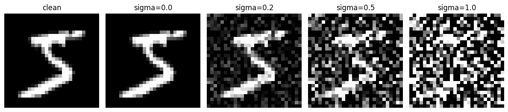
The D = 128 denoiser is trained for five epochs with batch size 256, Adam learning rate 0.0001, and noise level σ = 0.5.
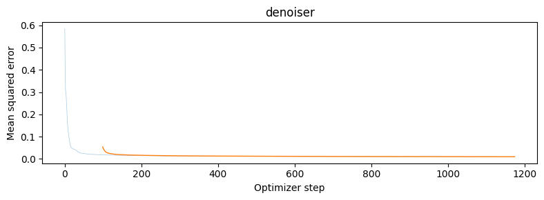
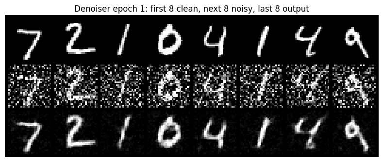
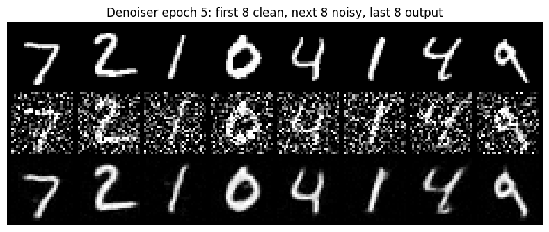
The trained denoiser is evaluated on test digits corrupted at noise levels beyond the training setting.
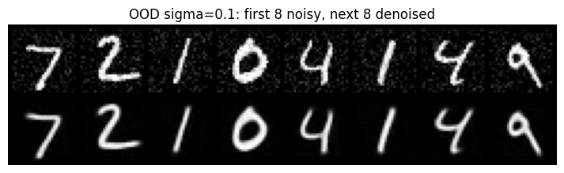
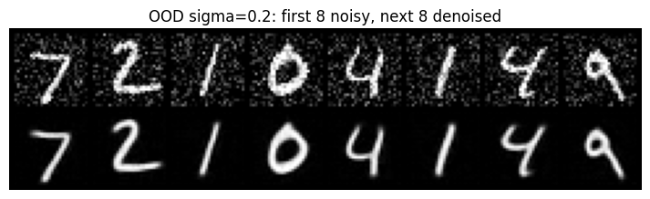
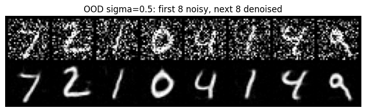
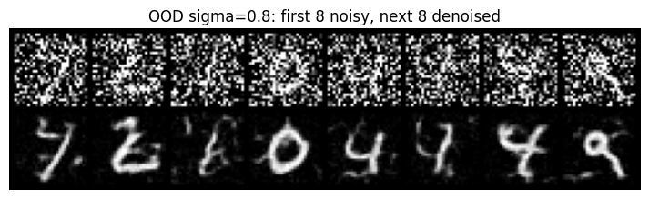
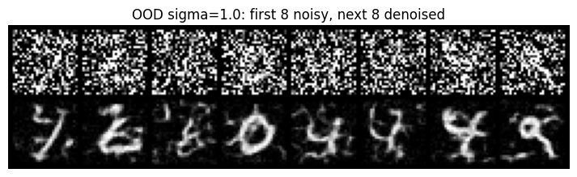
A separate UNet maps independent Gaussian noise inputs to MNIST digits. With MSE, a fixed input tends toward the conditional mean of the training digits.
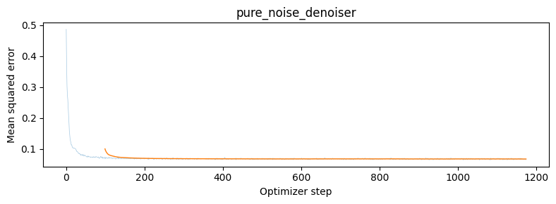
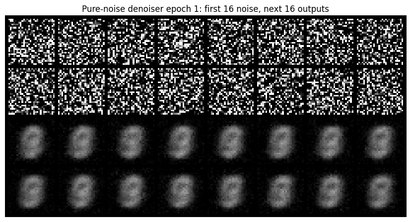
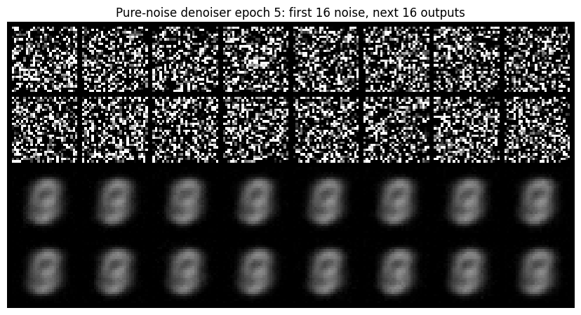
The flow moves from Gaussian noise x₀ at t = 0 to a data image x₁ at t = 1. The target velocity is x₁ − x₀.
The time-conditioned UNet receives the noisy image and normalized flow time, and predicts the velocity field used during sampling.
The model is trained for 10 epochs with 50 flow steps. Its learning rate decays exponentially from 0.01.
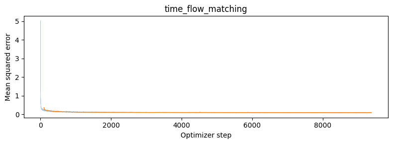
Ten samples are generated at epochs 1, 5, and 10 using the same seeds to compare how training shapes the flow.
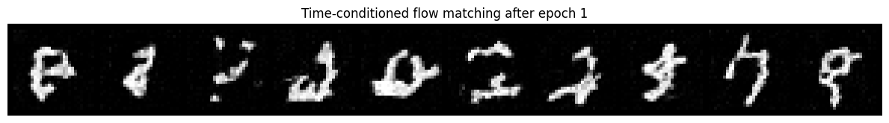
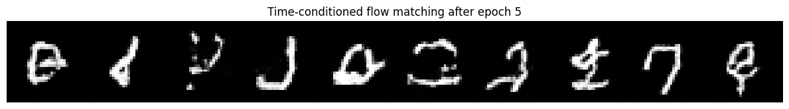
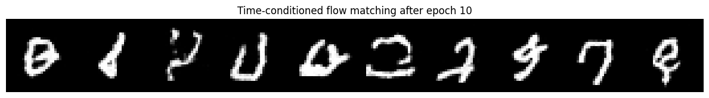
Class and time embeddings condition the UNet. During training, class dropout teaches the model both conditional and unconditional predictions for classifier-free guidance.
The class-conditioned model trains for 10 epochs with class-drop probability 0.1. The scheduled run starts at learning rate 0.01; the comparison uses a constant 0.003.
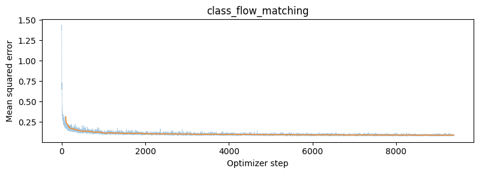
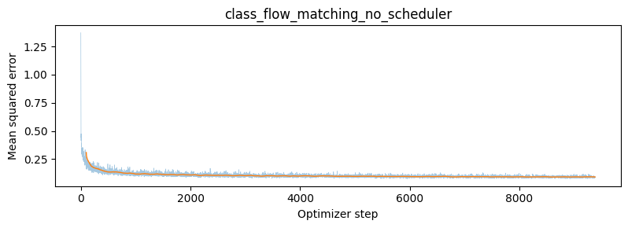
Each row corresponds to a digit class and contains four samples. Classifier-free guidance uses scale 5 with the same seeds at epochs 1, 5, and 10.
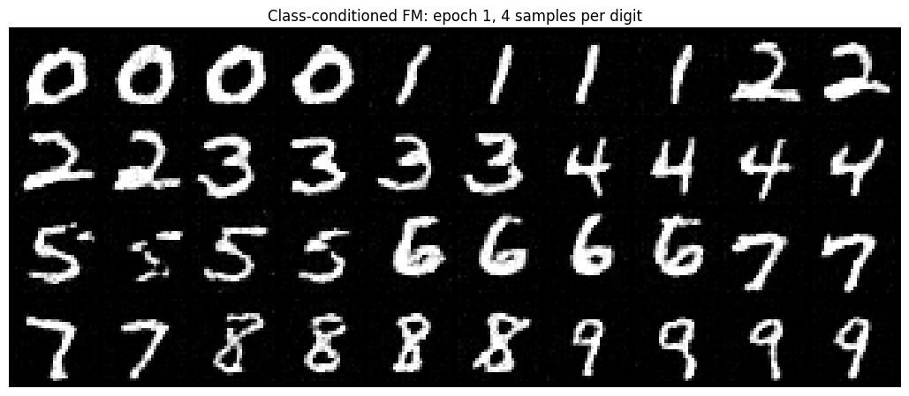
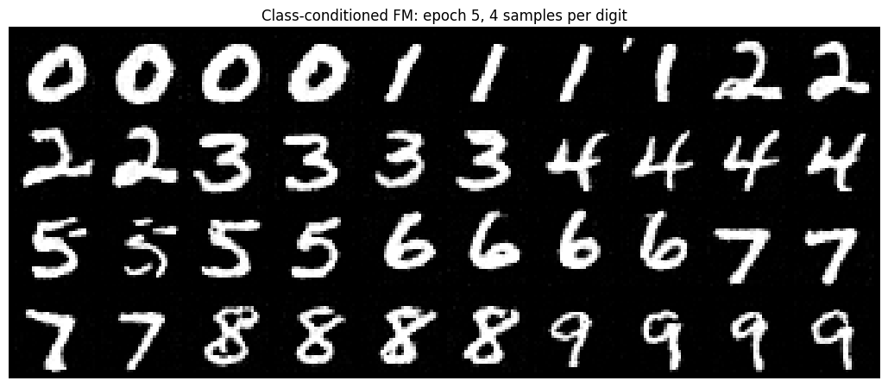
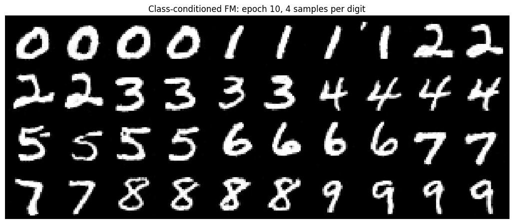
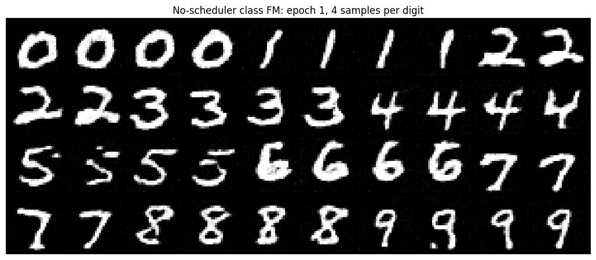
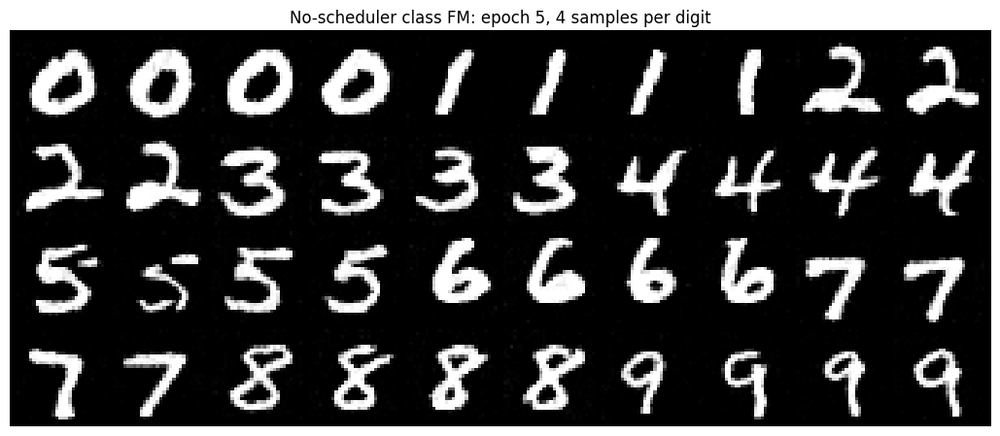
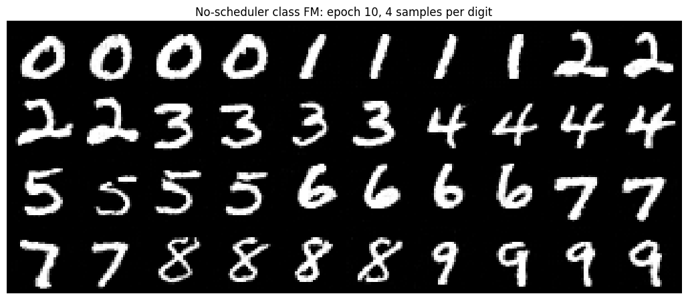